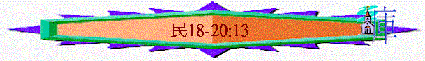

|
超越障礙、邁向豐盛（１－３６） |
|||||||||||||||||
|
預備起行 1-10:10 |
踏上征途10:11-14:45 |
曠野飄流 15-20:13 |
超越障礙 20:14-25:18 | 邁向豐盛 26-36 | |||||||||||||
|
組 織 |
生 活 |
基 礎 |
順 利 |
軟 弱 |
失 敗 |
教 育 |
叛 逆 |
定 例 |
管 教 |
環 境 |
軟 弱 |
咒 詛 |
引 誘 |
組 織 |
軍 令 |
回 顧 |
分 地 |
三.曠野飄流（１５－２０：１３）
3.延續的定例(18-19)
＊啟發：這些定例與之前可拉黨事件有沒有關連呢？
＊特點：很多【永遠的鹽約】【世世代代永遠的定例】【命定律法中的一條律例】
【作永遠的定例】（18:20、23、19:1、10）等字眼
A.賞賜的定例（18）
＊啟發：這些條例和祭司被攻擊，利未人可拉不滿？？職有甚麼關連？
＊特點：很多【賞賜】【為酬他們的勞苦，類似字眼】
a.祭司們的賞賜
(1)得職任
----尊榮的職任（來5:4、7:7、出28:2、29:6）
----神聖的職任（出28:36、29:1、7）
----近神的職任（來9:6-7）
(2)得服事
〜利未人是服事祭司的
(3)得聖物
【．．．．我已將歸我的舉祭，就是以色列人一切分別為聖的物，交給你管理，因你受過膏，把這些都賜給你和你的子孫，當作永得的分】v．８
----火祭不經火：凡男丁可以吃
----舉祭、搖祭：凡家中的潔淨人可以吃
----初熟之物：凡家中的潔淨人可以吃
----永獻的（頭生、贖銀）：歸給祭司
(4)得產業
「耶和華對亞倫說：「你在以色列人的境內不可有產業，在他們中間也不可有分。我就是你的分，是你的產業。」」18:20
b.利未人的賞賜
「凡以色列中出產的十分之一，我已賜給利未的子孫為業；因他們所辦的是會幕的事，所以賜給他們為酬他們的勞。」18:21
----得百姓十分一出產
c.事奉者的責任
(1)要承擔－罪孽
「耶和華對亞倫說：「你和你的兒子，並你本族的人，要一同擔當干犯聖所的罪孽。你和你的兒子也要一同擔當干犯祭司職任的罪孽。」18:1
「從今以後，以色列人不可挨近會幕，免得他們擔罪而死。」18:22
(2)要看守－聖所
「他們要與你聯合，也要看守會幕，辦理帳幕一切的事，只是外人不可挨近你們。」18:4
「從今以後，以色列人不可挨近會幕，免得他們擔罪而死。惟獨利未人要辦會幕的事，擔當罪孽；這要作你們世世代代永遠的定例。他們在以色列人中不可有產業。」18:22-23
(3)要奉獻－十分一
「耶和華吩咐摩西說：「你曉諭利未人說：你們從以色列人中所取的十分之一，就是我給你們為業的，要再從那十分之一中取十分之一作為舉祭獻給耶和華。」18:25-26
＊今日新約基督徒和舊約的事奉者比較，在賞賜上有甚麼不同之處？
B.潔淨的律例(19)
＊特點：很多「不潔淨」「死屍」字眼，因在之前瘟疫中已有14,700人死去，另外，在飄流的日子也會很多人離開世界。
＊啟發：為甚麼要用除污水，不用獻贖罪祭之法？
a.除污的媒介(除污水)
(1)完全的生命：「一隻沒有殘疾，未曾負軛，純紅的母牛」v.2
(2)流血的宰殺：「．．．．人就把牛宰在他面前．．．．這牛的血，在會幕前面彈七次」v4
(3)徹底的焚燒：「．．．．把母牛焚燒，牛的皮、肉、血、糞都要焚燒」v5
(4)潔淨的用品：「．．．．要把香柏木，牛膝草，朱紅色線都丟在燒牛的火中」v6
(5)活水的加上：「．．．．拿些燒成的除罪灰，放在器皿�堙A倒上活水」v17
b.不潔的定義
「不潔的人所摸的一切物，就不潔淨，摸了這物的人，必不潔淨到晚上」v22
(1)直接的觸摸
(2)間接的沾染
〜接觸與屍體有關的東西(例如墳墓、屍體的帳柵……)
c.自潔的必要
(1)是必要的！
「但那污穢而不潔淨自己的，要將他從會中剪除，因為他玷污了耶和華的聖所。除污穢的水沒有灑在他身上，他是不潔淨的。」19:20
(2)及早的！
「那人到第三天要用這除污穢的水潔淨自己，第七天就潔淨了。他若在第三天不潔淨自己，第七天就不潔淨了。」19:12
4.延續的管教(20:1-13)
＊啟發：神的管教（在加底斯中）會否完全成就？神公義管教會否因年日，因個別人物而停止的？
A.米利暗－－死在加低斯
＊女先知為何入不到迦南
「．．．．必不得過我起蓋應許s你們住的那地，惟有耶孚尼的兒子苒勒，和嫩的兒子約書亞，才能過去。但你們的（婦人）孩子．．．．我必把他們領過去．．．．」14:30-31
a.毀謗摩西
b.參予加低斯事件（可能）
B.摩西、亞倫－－入不到迦南
a.事件起因
「會眾沒有水喝，就聚集攻擊摩西、亞倫。百姓向摩西爭鬧說：「我們的弟兄曾死在耶和華面前，我們恨不得與他們同死。你們為何把耶和華的會眾領到這曠野、使我們和牲畜都死在這裡呢？你們為何逼著我們出埃及、領我們到這壞地方呢？這地方不好撒種，也沒有無花果樹、葡萄樹、石榴樹，又沒有水喝。」」20:2-5
〜因百姓沒有水喝就發怨言，攻擊摩西亞倫
b.神僕失敗
(1)說了急躁話
「是因他們惹動他的靈，摩西（原文作他）用嘴說了急躁的話。」詩106:33
〜神只叫他吩咐磐石流出水，沒叫他講一些急躁的說話
(2)不尊神為聖
「耶和華對摩西、亞倫說：「因為你們不信我，不在以色列人眼前尊我為聖，所以你們必不得領這會眾進我所賜給他們的地去。」」20:12
〜「我為你使」將責任推卸給神，令人更埋怨神，另外也不能表現神作為神代表柔和的一面。
(3)不信神吩咐
〜神沒吩咐要擊打磐石兩下，只要吩咐就可以，但因他沒信心，以為要靠多些作為才能成就！
(4)違背神命令
「亞倫要歸到他列祖（原文作本民）那裡。他必不得入我所賜給以色列人的地；因為在米利巴水，你們違背了我的命。」20:24
c.神的管教
「那人到第三天要用這除污穢的水潔淨自己，第七天就潔淨了。他若在第三天不潔淨自己，第七天就不潔淨了。」20:12
Conclusion：人在飄流、管教的日子，仍要守神的吩咐。